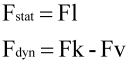
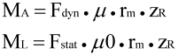
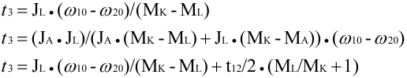
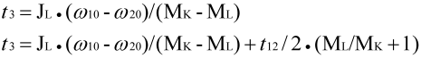
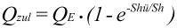
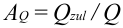

|
|
|


计算
输入弹簧力/定义参考扭矩
若决定输入弹簧力（参考扭矩检查已选），则参考扭矩按以下方式计算：

Fk （N）：活塞力（FK = pK/AK）
pK (N/mm2): 活塞压力
AK (mm2)：活塞表面积
Fl （N）：使摩擦片接触的弹簧力
Fv （N）：弹簧力的预紧力
F (N): 第一板上的合力 (N)
然后确定加速扭矩或保持扭矩。如果已定义了不同的滑动摩擦系数，则使用这些；否则使用平均滑动摩擦系数：

MA (Nm): 加速扭矩
Fstat, Fdyn （N）：第一片上的合力
μ (-): 滑动摩擦系数
rm (mm): 平均摩擦半径
zR （-）：摩擦表面（板）数量
ML (Nm): 负载力矩
μ0 （-）：静摩擦系数
参考扭矩随后由 MΑ+ML 计算得出。用户还可以定义扭矩损失，对于离合器其为负号，对于制动器为正号。
然而，如果直接定义参考扭矩，就不能同时定义扭矩损失。此扭矩损失必须在参考扭矩中予以考虑。
使用 VDI 2241 [106] 中规定的公式来定义滑动时间 t3。
对于离合器：
MK=MA，其中 MK 为指定值，并考虑 t 的影响（按此顺序）：

对于制动器：
其中 MK 为指定值，并考虑 t12 的影响（按此顺序）：

摩擦功 Q 的计算会考虑或忽略“扭矩上升时间区间” t12，具体取决于该值是否已定义。同时还会计算总摩擦面上的切换容量和最大切换容量。
如果为滑动摩擦系数输入曲线点，则将扭矩图中计算曲线下方的面积计算为摩擦功。切换容量随后由该计算按时间积分得出的结果导出。
这些值必须作为特定值输入到摩擦表面上，因为这些值由制造商在相关目录中提供。
此外，当您输入切换频率和允许的摩擦啮合功（单次切换）时，程序计算一个利用率，以显示所选离合器是否足够。

Qzul (kJ): 允许的摩擦功
QE (kJ): 允许的摩擦功（单次切换）
Shü (1/h): 相交点切换频率
Sh (1/h): 单位时间内的切换频率
然后根据此允许值和计算出的摩擦啮合功确定利用率 AQ：

当您选择离合器时，必须考虑参考扭矩，而最重要的是允许的摩擦啮合功 QE（单次切换）以及计算得出的允许摩擦啮合功（用于更高的切换频率）。
Calculation
Inputting the spring forces/defining the reference torque
If you decide to input the spring forces (Reference torque check is selected), the reference torque is calculated as follows:
Fk (N): Piston force (FK = pK/AK)
pK (N/mm2): Compression on the piston
AK (mm2): Piston surface area
Fl (N): Spring force to plates contact
Fv (N): Pretension for spring force
F (N): Resulting force on the first plate (N)
The accelerating torque or the holding torque is then determined from this. Using the different coefficients of sliding friction, if these have been defined, otherwise using the average coefficient of sliding friction:
MA (Nm): Accelerating torque
Fstat, Fdyn (N): Resulting force on the first plate
μ (-): Coefficient of sliding friction
rm (mm): average friction radius
zR (-): Number of friction surfaces (plates)
ML (Nm): Load torque
μ0 (-): Coefficient of static friction
The reference torque is then calculated from MΑ+ML. You can also define a torque loss, which has a negative sign for a coupling and a positive sign for a brake.
However, if you define the reference torque directly, you cannot also define a torque loss. This must then be taken into account with the reference torque.
The formulae specified in VDI 2241 [106] are used to define the sliding time t3.
For a coupling:
MK=MA, where MK is specified, with the influence of t (in this sequence):
For a brake:
where MK is specified, with the influence of t12 (in this sequence):
The engagement work of friction Q is then calculated with, or without, taking the "torque-rise space-of-time" t12 into account, depending on whether this value has been defined. The switching capacity on the total friction surface and the maximum switching capacity are also calculated.
If you input curve points for the coefficient of sliding friction, the area below the calculated curve in the torque diagram is calculated as the engagement work of friction. The switching capacity is then derived from the time-based conclusion of this calculation.
Each of these values must be input as specific values for the friction surfaces because these are provided by the manufacturers in the relevant catalogs.
Furthermore, when you input the switching frequencies and the permitted engagement work of friction (one-time switching) the program calculates a utilization to show whether the selected coupling will be adequate.
Qzul (kJ): permissible engagement work of friction
QE (kJ): permissible engagement work of friction (one-time switching)
Shü (1/h): Intersection-point switching frequency
Sh (1/h): Switching frequency per time unit
The utilization AQ is then determined from this permitted value and the calculated engagement work of friction:
When you select a coupling, you must take into account the reference torque, and most importantly, the permissible engagement work of friction QE (one-time switching) and the calculated permissible engagement work of friction (for a higher switching frequency).